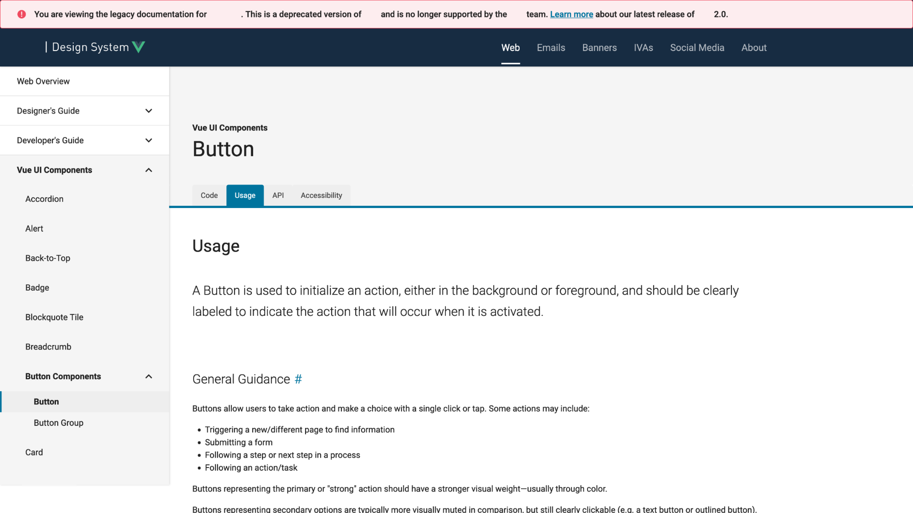
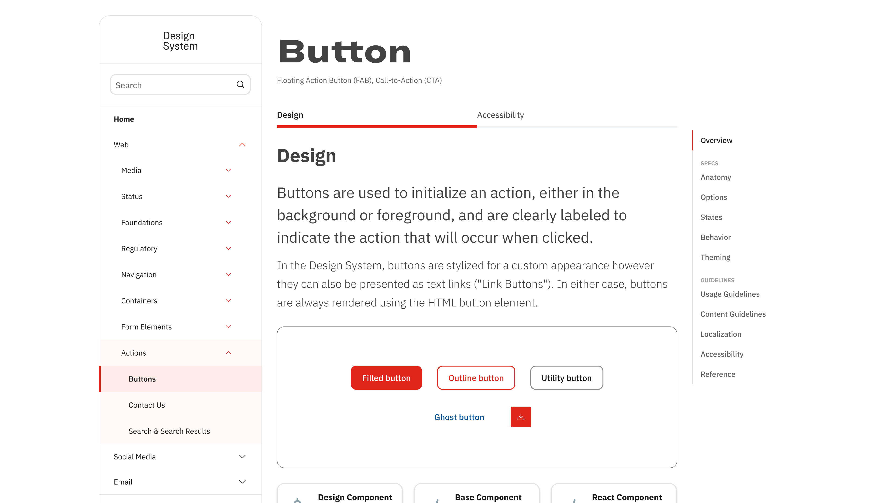

The redesigned portal — component overview with visual examples, tabbed Design/Accessibility split, and right-rail anchor navigation for deep pages
Design Systems · UX Research · Enterprise UX
Transforming Design System Documentation: From Chaos to Clarity
The design system faced a perfect storm of challenges following the merger of disparate UX/Design groups into one Enterprise UX organization. Documentation hadn't been updated since 2018, creating a massive knowledge gap serving 100,000+ employees across 50+ pharmaceutical brands.
I drove this from research through redesign — identifying the gaps, designing the solution, recruiting a dedicated accessibility resource to build out the a11y documentation, and ultimately stepping into the Product Owner role to see it through. The result transformed outdated, development-focused documentation into a system that designers and developers actually wanted to use.
The redesigned portal — component overview with visual examples, tabbed Design/Accessibility split, and right-rail anchor navigation for deep pages
The Perfect Storm: Documentation from 2018, a development-focused portal alienating designers, tribal knowledge being lost as team members left, and enterprise-scale complexity across 50+ pharmaceutical brands.
I designed and executed the full research program — not as a handoff to another researcher, but end to end. I wrote the surveys, ran the interviews, facilitated the card sort, and synthesized the findings into the design brief.
Comprehensive assessment sent to 30+ teammates across disciplines using Microsoft Forms
1:1 moderated interviews with designers, developers, and design system users
Hybrid card sort to reveal user-preferred organizational models
Competitive analysis of documentation patterns from leading design systems
Component interaction states weren't documented anywhere.
Designers and developers used different terminology for component elements.
Internal and external component structure wasn't documented.
The before/after contrast across two core documentation areas — usage guidelines and accessibility — shows the full scope of the redesign. Both sections went from dense, developer-first text to structured, visual, audience-aware documentation.

Before — legacy portal. Dense prose, no component visualization, deprecated version warning. Designers had to read their way to answers.

After — redesigned portal. Visual component examples above the fold, tabbed Design/Accessibility split, right-rail navigation for long pages.

Do/don't usage cards — a pattern absent from the legacy system entirely. Visual guidance replaced text-only rules, reducing misinterpretation across 50+ brand teams.

Before — accessibility was an afterthought tab with the same undifferentiated text layout as every other section.

After — accessibility got full structural treatment: right-rail anchors, WCAG criteria references, and screen reader behavior documented explicitly.

Anatomy callouts in accessibility docs — numbered indicators connect visual components to their ARIA attributes and code implementation, bridging the designer-developer gap directly in the documentation.
I pushed hard for a dedicated anatomy section — numbered callouts mapping every component element with precise specifications, so designers could recreate a component from concrete specs rather than reverse-engineering an existing one.
There was organizational skepticism about the maintenance burden. I argued that the cost of maintaining clear specs was far lower than the ongoing cost of designer-developer misalignment on every handoff. I won the argument, partnered with a dedicated accessibility resource to build out a substantial portion, and got it into the portal — though a shift in priorities meant not all of it reached production. What did ship immediately reduced handoff questions.
The legacy portal treated accessibility as an afterthought — a tab with the same undifferentiated text layout as everything else. I advocated for giving accessibility its own structural treatment: right-rail anchors, WCAG criteria, keyboard behavior, screen reader notes.
Getting dedicated resourcing for this took persuasion — accessibility work is often seen as a compliance checkbox rather than a documentation problem worth investing in. The resulting section became one of the most referenced parts of the redesigned portal.
This project required me to shift roles as organizational needs changed — something I've come to see as a feature of working on complex systems rather than a detour from the design work.
I led the full research program — designing the study, facilitating interviews, running the card sort, and synthesizing findings into a design brief that gave us a clear, defensible direction. This wasn't handed off to a researcher. I ran it because I knew the resulting design would be better if I carried the user insights all the way through.
When a key team member went on maternity leave, I stepped into the Product Owner role without stepping back from design. I managed the backlog, ran stakeholder alignment sessions, and kept the project moving — while continuing to make design decisions. It reinforced something I already believed: the best design outcomes happen when the designer understands what surrounds the design work.